🌿 Période
Le Jurassique
De −201 à −145 millions d’années. L’âge des géants. Les sauropodes atteignent des tailles folles et les premiers oiseaux prennent leur envol.
Que se passait-il ?
La Pangée se fissure et commence à se séparer. La mer s’engouffre dans les brèches, le climat devient humide et des forêts luxuriantes recouvrent la planète.
Avec autant de nourriture, les herbivores grandissent énormément. C’est l’âge d’or des sauropodes : Diplodocus, Brachiosaurus, Apatosaurus…
Pour chasser des proies aussi grosses, les carnivores grandissent aussi. Allosaurus devient le prédateur numéro un des plaines américaines.
Un événement discret change tout : de petits dinosaures à plumes apprennent à planer. Archaeopteryx annonce la naissance des oiseaux.
🌍 Le monde à cette époque
| Climat | Chaud et humide, comme une serre tropicale géante. |
|---|---|
| Végétation | Immenses forêts de conifères, ginkgos, cycas et fougères arborescentes. |
| Durée | 56 millions d’années |
💡 Le fait marquant
Les oiseaux sont nés au Jurassique : ce sont les seuls dinosaures encore vivants aujourd’hui.
Les créatures du Jurassique
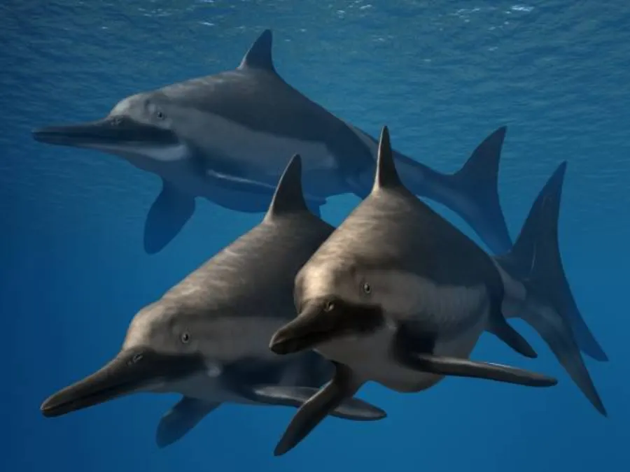
Ichthyosaurus Un reptile marin en forme de dauphin — et pas un dinosaure non plus ! 🌿 Jurassique 🥩 Carnivore ⚠️ Pas un dinosaure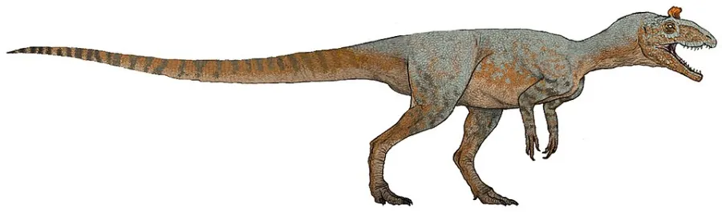
Cryolophosaurus Le seul grand carnivore découvert sur le continent de glace ! 🌿 Jurassique 🥩 Carnivore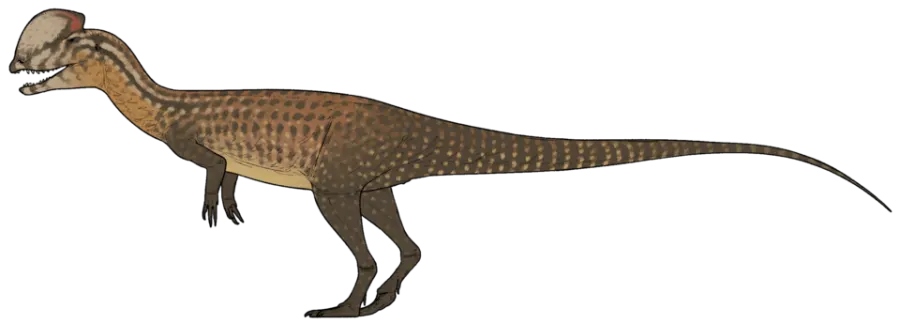
Dilophosaurus Le dinosaure au casque double, star incomprise du cinéma. 🌿 Jurassique 🥩 Carnivore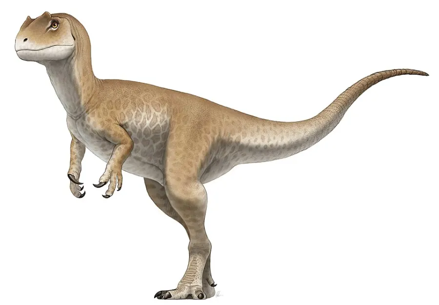
Allosaurus Le lion du Jurassique : rapide, puissant et très nombreux. 🌿 Jurassique 🥩 Carnivore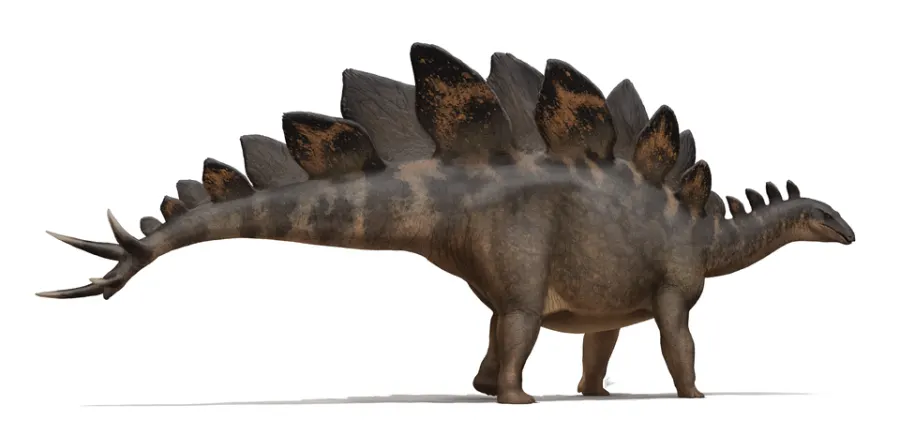
Stegosaurus Des plaques sur le dos et quatre pointes au bout de la queue ! 🌿 Jurassique 🌿 Herbivore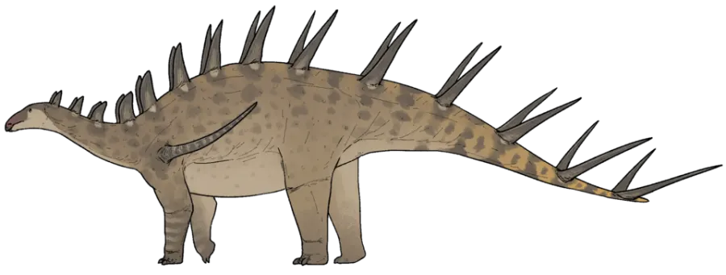
Kentrosaurus Le cousin africain du Stégosaure, hérissé de piques de la tête à la queue. 🌿 Jurassique 🌿 Herbivore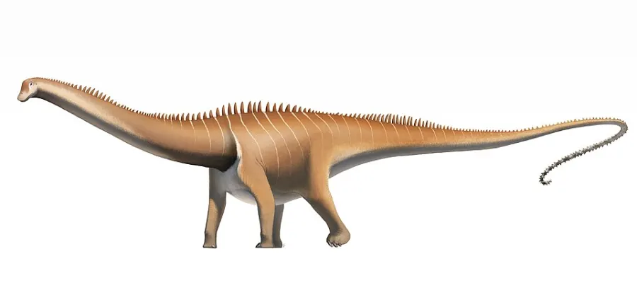
Diplodocus Un cou immense devant, un fouet géant derrière : 26 mètres de long ! 🌿 Jurassique 🌿 Herbivore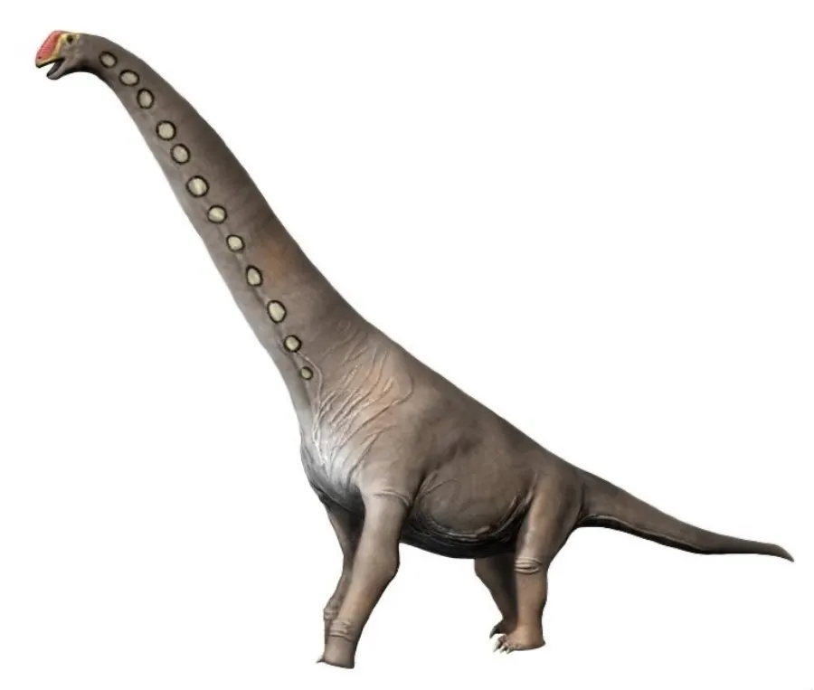
Brachiosaurus La girafe des dinosaures : sa tête montait à 13 mètres de haut ! 🌿 Jurassique 🌿 Herbivore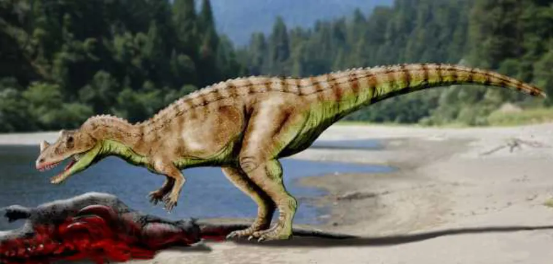
Ceratosaurus Une corne sur le nez et une rangée d’écailles sur le dos. 🌿 Jurassique 🥩 Carnivore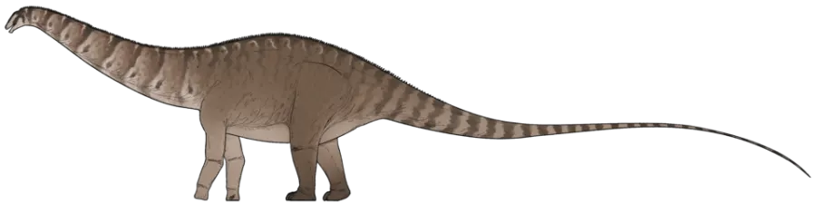
Apatosaurus Le colosse au cou épais, longtemps appelé « Brontosaure ». 🌿 Jurassique 🌿 Herbivore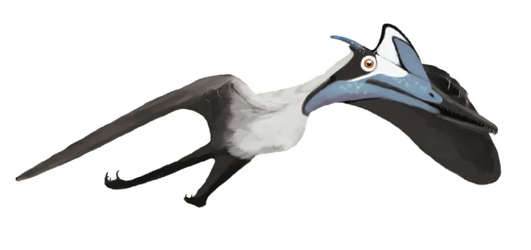
Pterodactylus Un reptile volant… mais surtout : ce n’est PAS un dinosaure ! 🌿 Jurassique 🥩 Carnivore ⚠️ Pas un dinosaure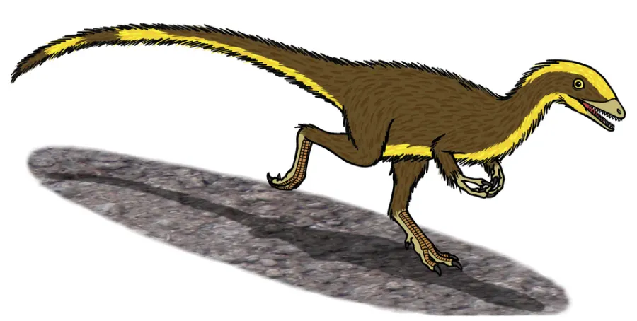
Compsognathus Grand comme une poule, mais rapide comme l’éclair ! 🌿 Jurassique 🥩 Carnivore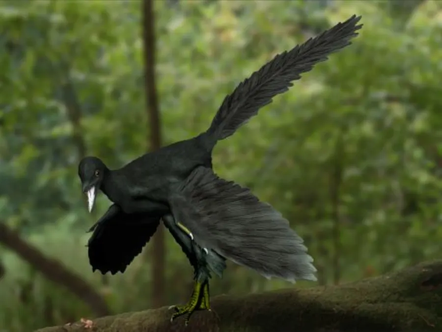
Archaeopteryx Le chaînon entre les dinosaures et les oiseaux : il avait des plumes ET des dents ! 🌿 Jurassique 🥩 Carnivore